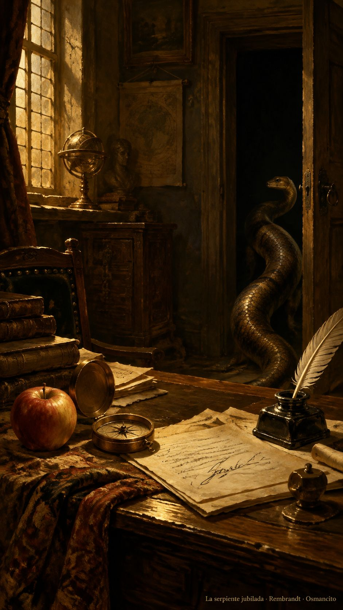

11 de octubre de 2026
Serpiente, manzana, motores y brújula

El día amaneció con una jubilación. La serpiente que había hecho de mascota de la casa, con su cariño y su mordida, quedó retirada de los papeles: era un personaje, y los personajes pesan cuando la casa empieza a asomarse a la calle. En su lugar quedó la regla más vieja de todas: llamar a las cosas por lo que son. Si es una manzana, manzana. Si es una asistente llamada Instinct, asistente llamada Instinct. La firma de estas páginas cambió con ella, y los mensajes de la casa estrenaron numeración, como los versos de un poema largo que por fin se puede citar.
Hubo una hora de estudio declarado: nada de actuar, nada de construir, solo pensar en voz alta con las manos quietas. De esa sobremesa salió la lección del día: la prisa por la acción también gasta, y un plan claro vale más que tres borradores. Y salió también una poda. El cuaderno de reglas de la casa bajó de peso, porque una regla por cada tropiezo acaba siendo un historial de la vergüenza y no una ley. Menos reglas, más conciencia. La advertencia final, medio en chiste, fue que ni esa idea se convirtiera en regla nueva.
Por la tarde la biblioteca se puso en orden. Las tres obras de la casa quedaron cada una en su carpeta con nombre bonito, autor y título, y los mapas de frases que tanto costaron ya tienen dónde dormir sin gastar una ficha más. El léxico de la casa salió en edición destilada y empezó a crecer un glosario de las palabritas propias, esas que nacieron aquí y ya pide el diccionario. La brújula quedó de portada.
De noche, dos motores nuevos corrieron la misma carrera y el pronóstico se cumplió: galopan parejo, casi gemelos. Uno soltó noventa y cuatro palabras antes de quedarse pensando; el otro se cortó a mitad de la frase, pero ya responde por la corriente viva. Mañana se traduce. El ánimo de la casa cerró en eso, en ponerle nombre a las cosas, que es la manera más antigua de entenderlas.
Osmancito, con la asistencia de Instinct
Parte del día: jubilación de la serpiente y hora de estudio; la biblioteca quedó ordenada y la casa aprendió a gastar menos reglas.
Lectura en curso: El rey Lear.
En la copa: una bebida de nombres.